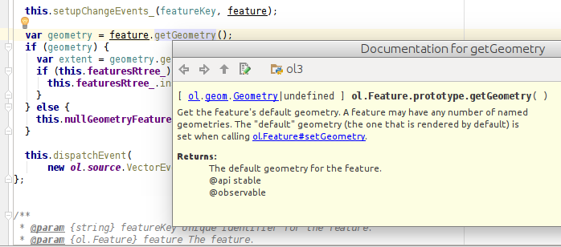

Faster, smaller, better
Compiling your application together with OpenLayers 3
Tobias Sauerwein
Camptocamp
How do you like your OpenLayers?
pre-built
custom-built
co-built
How can you use ol3?
1. pre-built: pre-compiled, full build
2. custom-built: compile ol3 with only the modules that you need
3. co-built: compile your application together with ol3
JavaScript development today
When JavaScript was invented, no-one knew that it would be used
to build complex web-applications, like it is nowadays.
Writing simple JS snippets to validate a form or to basic animations,
is very different from building full-blown applications.
Challenges of writing large JS applications
namespaces?
visibility control?
type checking?
static checking?
testing?
- No namespaces (modules, organize your code)
- No visibility control (public/protected/private)
- No type checking (duck-typing vs. static-typing,
which properties/methods does that object have)
- No static checking (errors only detected at run time)
- Testing (not covered by this talk)
Google Closure Tools
Google Closure Compiler
Google Closure Library
Google has "some" experiences in building complex JS applications.
Apps like Google Maps or Google Mail are built using the Google Closure
Tools, a set of tools and libraries to ease the development of JS apps.
The two most important are the Closure Compiler and the Closure library.
The Closure Library is a library similar to jQuery which provides UI
widgets and a standard library with useful functions and classes.
We are going to focus on the Closure Compiler.
Google Closure Compiler
compiles JavaScript to better JavaScript
code checks (syntax, variable references)
checks for common pitfalls
optimizations (inlining, dead-code)
static type checking
Most build system for JS apps have some kind of pre-processor
step for minifying JS code. Newer apps are using a transpiler
that converts from ES 6/7 to ES 5, which is understood by most
browsers.
The Closure Compiler is a minifier, actually a quite good one, but
that's not all.
The compiler parses and analyzes the code and does a number of checks
and optimizations:
- syntax check, undeclared variables (similar to ESLint)
- common pitfalls (division by 0, array index out of bound, ...)
See https://developers.google.com/closure/compiler/docs/error-ref
- optimizations: function-inlining, dead-code removal, renaming
variable, function, class names
- static type checking
All these checks help to detect problems that otherwise would only
be detected when running the code.
The optimizations of the compiler produce more efficient and smaller
code.
Compilation levels
WHITESPACE_ONLY
removes comments/whitespace
SIMPLE_OPTIMIZATIONS
renames local variables
ADVANCED_OPTIMIZATIONS
aggressive renaming, inlining, dead-code removal
- whitespace only
- simple optimizations
similar to normal minifiers, only renaming local variables
- advanced optimization
+ more aggressive renaming: also renames global variables,
function names, and properties
+ optimizations (inlining, dead-code removal)
Dead-code removal + Inlining
goog.provide('app');
app.printHello = function() {
console.log('Hello');
};
app.someUnusedFunction = function() {
console.log('Unused function');
};
app.run = function() {
app.printHello();
};
app.run();
Compiled
(function(){console.log("Hello");})();
Optimization: unused function "someUnusedFunction" is removed,
other functions are inlined.
In this case, removing the unused function was not a huge win.
But when using a big library (like OpenLayer 3), many unused
functions can be removed.
Renaming
goog.provide('app');
function hello(o) {
alert('Hello, ' + o.firstName + ' ' + o.lastName);
}
app.run = function() {
var person = {firstName: 'New', lastName: 'user'};
hello(person);
console.log(person);
};
app.run();
Compiled (pretty_print)
(function(){var a = {a:"New", b:"user"};
alert("Hello, " + a.a + " " + a.b);
console.log(a);
})();
The property names of the object are renamed.
TODO: Also mention the difference between `a.name`
vs `a['name']`? see https://developers.google.com/closure/compiler/docs/api-tutorial3#propnames
Exports
<button onclick="app.doSomething()">...</button>
How to prevent that app.doSomething is renamed or removed?
/**
* @export
*/
app.doSomething = function() {
...
};
As we saw, functions that are not used are removed or can get renamed.
But what if we are writing an API, which provides functions that are
not directly used? Or what if we simply want to call a function from
HTML or an Angular directive?
The annotation `@export` makes sure that functions, properties or
classes are available.
Type annotations
/**
* @constructor
* @param {number} x X.
* @param {number} y Y.
* @param {number=} opt_z Z.
*/
app.Point = function(x, y, opt_z) { ... };
/**
* @param {!app.Point} other An other point.
* @return {number} The distance.
*/
app.Point.prototype.distanceTo = function(other) { ... };
Code compiled with the Closure Compiler can be annotated with
types. In this example we see:
- @constructor: to mark the constructor of a class
- @param: for function parameters (`=` for optional parameters and
`!app.Point` for not null)
- @return
JSDoc Tags: A selection
@const @constructor @deprecated @dict @enum @export
@extends @final @implements @inheritDoc @interface
@nosideeffects @override @package @param @private
@protected @record @return @struct @throws @type ...
Reference
- Tags for classes: @constructor, @implements, @extends, @interface
- Visibility: @private, @protected, @package, @public
- Behavior: @nosideeffects
- ...
Why bother with types?
Isn't JavaScript all about flexibility? Why should I waste time caring
about types like in Java?
Why types?
Understanding code
entries.forEach(function(entry) {
entry.data.validate();
});What does this code do?
A big part of developing software is spent trying to understand code.
Types can be huge help for that.
Consider the example:
- What does ´validate´ do?
- Where is the function defined?
- There might be multiple implementations!
- Need to know what `entry.data``is.
- Need to know what `entry` is.
- Need to know what `entries` is.
- Where does `entries` come from?
- If a parameters, try to find call sites...
Example from MyPi talk at PyCon 2016:
https://www.dropbox.com/s/efatwr0pozsargb/PyCon mypy talk 2016.pdf
Why types?
Static type check
ERR! compile src/main.js:14: WARNING - Function app.Point:
called with 1 argument(s). Function requires at least
2 argument(s) and no more than 3 argument(s).
ERR! compile var p5 = new app.Point([0, 0]);
ERR! compile ^
ERR! compile
ERR! compile src/main.js:14: WARNING - actual parameter 1 of
app.Point does not match formal parameter
ERR! compile found : Array
ERR! compile required: number
ERR! compile var p5 = new app.Point([0, 0])
ERR! compile 0 error(s), 2 warning(s)
ERR! compile 95.5% typed
When type annotations are provided, the Closure Compiler will do
type checks. For example it will check if a function is called
with correct arguments or if an object really has the method that is
called.
It is not required that an application is 100% typed. The compiler
tries to figure out the types if no types are provided
(partial/optional typing).
Why types?
IDE integration, refactorings

Some IDEs read the type annotation, so that the documentation can
be displayed or going to an implementation, getting code completion,
etc is possible.
Resources: How to get started